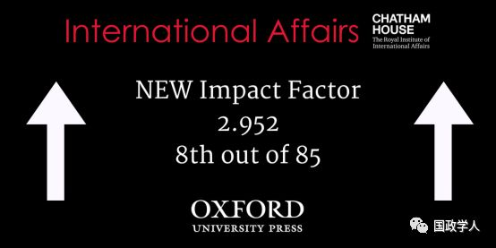

收录于合集
简 介
【作者】 **约瑟夫 ·奈（Joseph S. Nye），**世界著名国际政治学者、哈佛大学肯尼迪政府学院教授。曾出任卡特政府助理国务卿、克林顿政府国家情报委员会主席和助理国防部长。著有：《权力与相互依赖》《注定领导世界：美国权力性质的变迁》《美国时代结束了吗？》《美国权力的悖论》等。
**【 编译】李 源 **
【校对】 李代霓
【来源】 Nye Jr, J. S. (2019). The rise and fall of American hegemony from Wilson to Trump. International Affairs , 95 (1),63-80.
【期刊】 International Affairs，世界领先的国际关系期刊之一，也是少数几本涵盖整个学科的期刊之一。该期刊由伦敦皇家国际事务研究所(Royal Institute of International Affairs)于90年前创立并进行编辑，以学术严谨、注重实践而闻名。
此文为约瑟夫·奈的最新学术论文，由“国政学人”微信平台独家编译首发。

美国霸权的兴衰：从威尔逊到特朗普
The Rise and Fall of American Hegemony from Wilson to Trump
约瑟夫·奈（Joseph S. Nye）
内容提要
一个世纪前，伍罗德·威尔逊对一战的干预改变了美国的世界地位。但在20世纪30年代，美国再次退回到了孤立主义的立场。二战后，杜鲁门等领导人创建了联盟体系与多边制度框架，构成了我们所熟知的“自由主义国际秩序”或“美国治下的和平”。作为对美国世界地位的描述，这些术语显得有些过时，但其他国家对大国提供公共产品的需求仍然存在。威尔逊试图创建国际制度和以规则为基础的国际秩序的努力在当今仍然具有重要意义。领导不等于统治，它需要分享。面对美国实力的衰退与世界形势的日益复杂，“美国例外论”应该把重点放在分享全球公共产品的提供上，尤其是那些需要与其他国家共同行使权力的公共产品。同时，作者认为美国的世界地位可能更多地受到国内民粹主义政治崛起的威胁，而非国际舞台上其他大国的崛起。
The End of Optimism in US Foreign Policy
文章导读
**1
**
引言
得益于两大洋的保护与邻国的弱小，19世纪的美国主要致力于向西扩张，并试图避免卷入以欧洲为中心的全球均势。20世纪初，美国已成为世界上最大的经济体，它对一战的干预打破了欧洲力量平衡。然而，到了20世纪30年代，美国外交转向内向，再次退回到了孤立主义的立场。随着二战的爆发，罗斯福、杜鲁门、艾森豪威尔等领导人吸取了美国内向政策的教训，“国际主义”逐渐取代“孤立主义”。随之而来的是由安全联盟、多边制度与相对开放的经济政策所构成的美国国际秩序或“自由主义国际秩序”的建立，这也确立了70多年以来美国的世界地位。而当今，随着国际舞台上中国等新力量的崛起，以及民主国家内部新一轮民粹主义政治浪潮的高涨，这一秩序正在面临着大挑战。
**2
**
20 世纪的现实主义者与自由主义者
20 世纪初，随着美国权力的增长，其全球性选择也随之增加。作者在这一部分分析了 20 世纪早期美国权力扩张的两位主导人物：西奥多 · 罗斯福与伍罗德 · 威尔逊。罗斯福和威尔逊都是相信 “ 美国特殊使命 ” （ the specialmission of the United States ）的道德主义者，但他们却分别展示了美国例外论与道德传统的两个截然不同的方面：现实主义与自由主义。
西奥多·罗斯福相信美国的文明使命。一方面， 他是一个相信武力使用与力量均衡的现实主义者。他蔑视害怕战争的人，批判威尔逊的理想主义不切实际。 另一方面，他也有一种道德信念，认为美国可以将权力与崇高目标结合起来为人类服务。 而伍罗德·威尔逊则像美国二十世纪初的大多数领导人一样，认为自己是一个理想主义者。虽然他并不支持普遍人权，有着种族偏见与他那个时代最流行的盎格鲁·撒克逊沙文主义，也毫不犹豫地干预墨西哥和加勒比地区以促进民主，但他对国际事务的看法基本上是自由主义的。作者强调 威尔逊并没有提出原创性的自由主义观念，但他把这些观念运用到了他所认为更符合道德的美国外交政策中。 他了解均势原则，但认为其是不道德的。因此，一个以集体安全为基础的国际联盟将比出于权力均衡的联盟更加和平和公正。
作者强调虽然西奥多·罗斯福与伍罗德·威尔逊福最终都赞同美国对一战的干预，但他们是出于不同的原因。罗斯福是出于均势的考虑支持英国。而威尔逊则寻求没有胜利的和平，不相信使用武力获取物质利益。他认为美国的使命不是物质上的强化，而是领导所有国家建立一个新的国际社会。威尔逊强调美国是作为合作力量而参战，而不是盟友。面对德国的无限制潜艇战， 威尔逊出于道德的考虑决定加入战争，并试图在世界政治中建立一种更符合美国道德原则与价值观念的全球秩序。作者强调这里威尔逊具有两个转变的目标：一是试图改变美国的外交政策；二是试图改变世界政治的本质，并把两者联系在一起。
作者认为威尔逊的这些努力不但失败了，而且还在接下来的20年里适得其反，在美国国内导致了一股强烈的孤立主义浪潮。但是，不可忽视的是，威尔逊的思想对他的继任者们，特别是罗斯福和杜鲁门，产生了深远的影响，也正是他们创建了二战后的自由主义国际秩序。
WoodrowWilson embraced a vision of “liberal internationalism” that hashelped shape U.S. foreign policy ever since.
**3
**
一个世纪之后
一战结束100年后的今天是评估美国世界地位与威尔逊自由主义遗产的困难时刻，这不仅仅源自中国的崛起，而且也是由于美国国内政治的极化。2016年，特朗普的上台标志着战后持续70年的美国政策发生重大转变。 威尔逊是一个自由理想主义者，他想要创建多边制度，让民主世界更加安全。而特朗普则是一个特殊的现实主义者，他只关注于狭隘的国家利益，并且贬低民主作为国家软实力的重要来源。
作者强调 冷战后的单极格局为威尔逊主义在美国外交政策中的复兴提供了契机。 老布什是一位务实的现实主义者，他用威尔逊式的集体安全与“新世界秩序”来解释第一次海湾战争。他的继任者，克林顿奉行民主的“参与和扩展”战略。随着伊拉克战争日渐陷入僵局、美国民众与其盟友的支持日益下降，小布什也越来越多地从威尔逊式的道德主张中汲取营养，强调美国外交政策的“民主议程”。实际上， 大多数的新保守主义者之前都是自由主义者，他们信奉威尔逊的美国例外论与民主传播思想，尽管并没有继承他的多边主义观念。 作者认为小布什与威尔逊有着惊人的相似性。尽管威尔逊是一个理想主义者，而小布什是现实主义者，但两人都把在世界上其他地区传播民主与自由作为美国的使命。两人也都没有看到自身理想与国家实力间的巨大差距。他们都试图说服公众接受这种政策的转变，但同样都失败了。两人的政策也都导致了随后的紧缩战略反应，这一点尤其体现在当今特朗普的政策上。
接下来，作者借助相关学者的论述对于特朗普和其前任统治者的战略进行了对比。通过对特朗普、奥巴马与布什时期的《国家安全战略报告》的简单对比分析，有学者认为，虽然布什和奥巴马在很多方面存在很大不同，但他们都秉持着普遍自由主义的进步历史观，都认为美国身处由众多自由主义国家构成的自由主义国际秩序中，是公认的作为整个秩序最重要组成部分之一的自由主义国家。与其相反， 特朗普则充满了霍布斯式的现实主义观、零和博弈观以及对国家利益的狭隘界定 。 作者强调目前威尔逊主义处于休眠状态，二战后美国秩序的未来也是不确定的。
**4
**
“ 自由主义国际秩序 ”
作者认为“自由主义国际秩序”一词多少有点误导性， 因为这一秩序从来都不是全球性的，也不总是非常自由的。它是威尔逊自由主义与均势现实主义的结合，包括了四个方面：经济、安全、人权与自由主义政治价值观、保护全球公域 (protectionof the global commons) 。 在这一框架下，全球经济、社会与生态相互依存不断加强。但是，这一秩序的自由主义特征可能被夸大了。虽然美国可能普遍偏好于民主和开放，但在冷战竞争背景下它仍经常支持独裁者。当今，这一秩序的重要问题则是：即使美国在这一秩序中的地位发生变化，受益于这种以规则为基础的国际秩序的其他国家，例如中国，是否会继续维护这一制度框架。
美国的联盟体系与多边制度有助于世界的安全与稳定，“自由主义国际秩序”的维系有赖于美国的国内共识与对国家利益的界定。 之前美国国内舆论普遍认为维护与扩展自由主义国际秩序符合美国国家利益，但直到 2016 年，特朗普首次对这一共识发起了挑战。 美国的秩序在走向终结的同时，其世界地位也正在发生重大变化。
**5
**
中国将会取代美国吗？
许多观察家认为，中国的崛起将结束美国时代。但是， 作者认为与目前的传统观点相反，中国并不打算取代美国成为世界上最大的经济体。 尽管中国未来的经济总量可能会成为世界第一，但在其他经济指标上仍将落后于美国，例如人均收入等。况且，经济实力只是地缘政治平衡的一部分。在军事与软实力方面，中国也远远落后于美国。
同时，作者认为中国受益于战后的国际秩序，但问题在于它是否会在提供公共产品方面进行合作、是否已经准备好发挥这一作用。 总的来说，作者认为 中国迄今为止的行为表明，其意图并不是推翻这个使之受益的现行世界秩序，而是试图增加其在该秩序内的影响力。 不过，随着中国实力的增长，这种情况可能会发生变化。作者强调无论如何，随着中国实力的增长，美国的自由主义世界秩序将不得不做出改变。 权力必须得到共享 ，中国对自由主义或美国的统治并没有什么兴趣，它关注更多的是一个“开放的”或“基于规则的”世界秩序。

China Rising
**6
**
美国地位与全球公共产品
经济和军事规模是“美国例外论”（American exceptionalism）的另一个来源，如果美国仍然是世界上最强大的国家，那么它就有理由在提供全球公共产品方面发挥领导作用。然而，作者强调 这一角色需要对国家利益有一个宽泛的界定，而不是狭隘地关注 “ 搭便车行为 ” （ free-riding ）。
在新的跨国问题上，虽然美国的领导仍然重要，但问题的成功解决要求 与其他国家的合作 。从这个意义上来说，权力变成了一个正和博弈（又称合作博弈）。因此， 为实现某些共同目标，美国需要与其他国家共同行使权力，而不是仅仅强调美国对其他国家行使权力。 在一些跨国问题上，授予他国权力将有助于美国完成自身目标。
过去，美国的开放性增强了它创建全球网络、维系国际制度与联盟体系的能力。但当今， 即使美国仍然拥有超越其他任何国家的军事、经济和软实力资源，但它可能并不会选择将这些资源转化为全球舞台上的有效权力行为。 “美国第一”在某种程度上只是一个口号，每个国家都有权把自身利益放在第一位。但这背后更重要的问题是， 如何界定国家利益的范围，是宽泛的还是狭隘的？特朗普政府对国家利益的界定则是狭隘的、零和性的。因此，作者强调未来美国地位的主要威胁可能是来自于美国内部，而非外部。
**7
**
权力转换与内部威胁
民粹主义的产生既有经济根源，也有文化根源。工作机会的丧失，性别、种族、性取向等议题对传统价值观的冲击都是这一浪潮产生的重要原因。即使经济全球化没有发生，文化和人口的变化也会产生某种程度的民粹主义浪潮。 美国政治的两极分化早在特朗普当选之前就已开始，他的当选既是其症状表现，也是原因之一。 美国国内政治的极化很可能会持续下去，它所倾向的外交政策将削弱美国巩固国际制度、建立全球网络、有效应对新跨国问题的能力。本土民粹主义也将削弱美国的软实力与其在全球网络中的中心地位。
作者强调除了这些影响美国权力转换能力的国内与社会趋势外， 特朗普的独特性格也加剧了当今美国世界地位的不确定性。 同时，尽管特朗普的政策削弱了自由主义秩序的安全与经济维度，但到目前为止他并没有完全摧毁它们。在价值观上，特朗普对人权议题兴趣较小，也更愿意接纳威权式的领导人。
The government is divided against itself and cannot govern.
8 **
**结 论
在未来几十年里，军事力量将继续作为全球政治中的重要组成部分，而美国也仍将是世界领先的军事强国。 正如斯蒂芬·布鲁克斯（Stephen Brooks）和威廉·沃尔福斯（William Wohlforth）所言，“国家间权力分配的变化幅度与速度远没有人们普遍认为的那样强烈”。但美国国内学术界关于美国如何利用其权力的看法的确发生了翻天覆地的变化。冷战后，对离岸平衡、紧缩战略、克制战略、“抽身”战略(disengagement)等大战略的讨论变得日益流行。
目前，在许多地区事务与跨国议题上，军事力量并不是解决之道。 维系全球网络与国际制度、传播新兴领域（如网络空间和气候变化）的价值规范，都可以增强软实力并用以补充美国的硬权力资源。然而，它们却正在面临来自特朗普单边主义政策的挑战。
传播民主虽然可以成为软实力的来源，但前提是手段必须适度。过去，美国为促进民主而进行的过分干预导致了适得其反的效果。因此，受威尔逊所影响的新保守主义不太可能取得成功，传播自由与民主的斗争也将不会取得国内外的支持。但威尔逊试图创建国际制度和以规则为基础的国际秩序的努力在当今仍然具有重要意义。 领导不等于统治，它需要分享。 面对美国实力的衰退与世界形势的日益复杂，“ 美国例外论 ” 应该把重点放在分享全球公共产品的提供上，尤其是那些需要与其他国家共同行使权力的公共产品。 同时， 作者认为美国的世界地位可能更多地受到国内民粹主义政治崛起的威胁，而非国际舞台上其他大国的崛起。
The New Face of American Populism.
** 官网链接： Oxford Academic**
** https://academic.oup.com/ia/article/95/1/63/5273551**
_ ** _ 本文由国政学人平台独家编译首发 ，转载需授权**
更多阅读
【重磅推荐】巴里·布赞：英国学派视角下的中国崛起 | 国政学人
【重磅速递】米尔斯海默：注定失败：自由主义国际秩序的兴衰 | 国政学人
【美国研究】IS杂志：为何美国的外交大战略如此稳定？| 国政学人
【英国脱欧】以欧盟为核心的多中心外交：脱欧后英国的欧洲外交战略 | 国政学人
【民族主义】江忆恩：中国的民族主义正在高涨吗？基于对北京群众的调查 | 国政学人